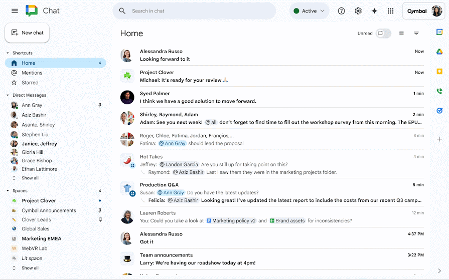
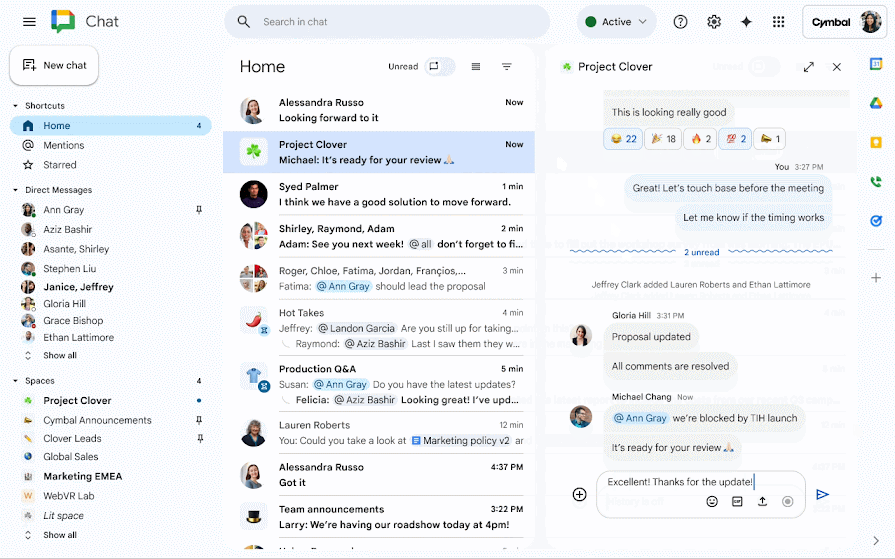
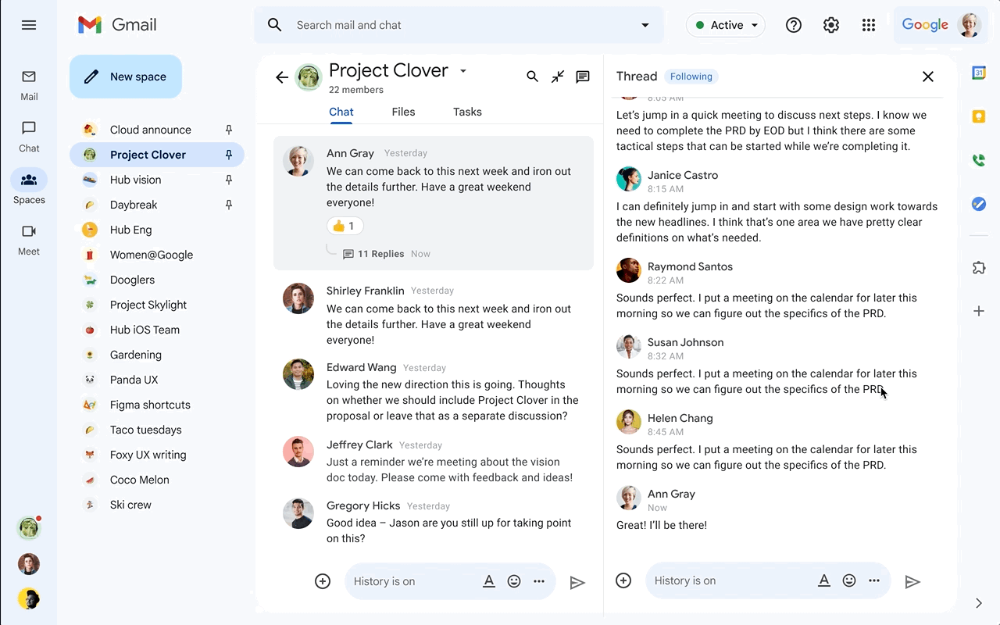

Google Chat is for quick staff collaboration: share updates, ask questions and keep useful files together with colleagues in your part of the school.
Your staff space
Access is automatic. You will see the space linked to the relevant staff Google Group:
| Google Chat space | Membership comes from |
|---|---|
| Teachers - Pre-Prep | teachers-preprep@claremontschool.co.uk |
| Teachers - Prep | teachers-prep@claremontschool.co.uk |
| Teachers - Senior | teachers-senior@claremontschool.co.uk |
You do not need to ask to join or add colleagues yourself. If you have just joined or moved team, the membership change may take a little time to appear. Submit a support ticket if you see the wrong space or cannot see the one you need.
1. Open Google Chat
- Go to chat.google.com and use your school Google account.
- Alternatively, open Gmail and select Chat on the left.
2. Find your space
- Look under Spaces on the left.
- Select Teachers - Pre-Prep, Teachers - Prep or Teachers - Senior, as appropriate.
- If it is not listed, select New chat, then Browse spaces, and search for the exact space name.

3. Post a message
- Open the staff space.
- Click the message box at the bottom and type your update or question.
- Select the blue Send arrow.

4. Reply to a message
- Point to the message you want to answer.
- Select Reply in thread.
- Type your reply in the thread panel and select Send.
Use a thread when you are answering a particular message. This keeps the main space easier to follow.

5. Share a file
- In the message box, select Upload file or Add Google Drive file.
- Choose the file, add a short message if helpful, then select Send.
- If Google asks about access, check the sharing option before sending.
Files shared in the space can also be found from the Shared or Files tab at the top, depending on the version of Google Chat you see.
Mentions
- Type @ followed by a colleague's name to draw their attention to a message.
- Use @all only when everyone in the space genuinely needs the message. It can notify the whole staff group, so please use it sparingly.
Cannot see your space? First check that you are using your school Google account. If it is still missing, submit a support ticket so IT can check the relevant staff Google Group.
Screens shown are generic examples from Google Chat Help and the Google Workspace Updates blog. Google may change the layout slightly.